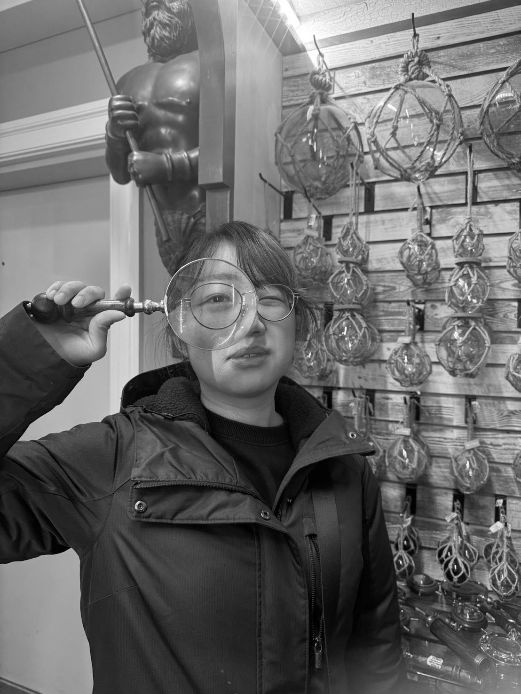

Lee Yen Wei / Yulia
Yulia Lee is an industrial designer whose practice explores the relationship between people, technology, and everyday environments. She developed a multidisciplinary approach spanning product design, interaction design, visual communication, and digital media. Her work moves between physical and digital experiences, from human-centered products and 3D prototypes to interactive applications, game environments, and immersive media. Beyond product development, Lee has worked across graphic design, service design, and experience design, incorporating research into markets, communities, and living environments. Her projects have included collaborations with local businesses and cultural organizations in Taiwan, exploring how design can help reinterpret local traditions and connect them with contemporary audiences. Her practice is also shaped by an interest in emerging technologies. She has explored AR/VR, game development, interactive installations, and digital interfaces as ways of creating new forms of storytelling and human interaction. Currently based in New York, Lee continues to develop a practice that combines industrial design with interactive media, with an interest in creating experiences that are both culturally grounded and technologically forward-looking.

Skills
Product design 3D modeling UI/UX design Graphic design
Softwares
Adobe- illustration photoshop aftereffects Clipstudio Unity p5js VScode
Language
Chinese English Japanese(N2) Taiwanese
Contacts
longlight1998@gmail.com +886 975717989 Lee Yen Wei